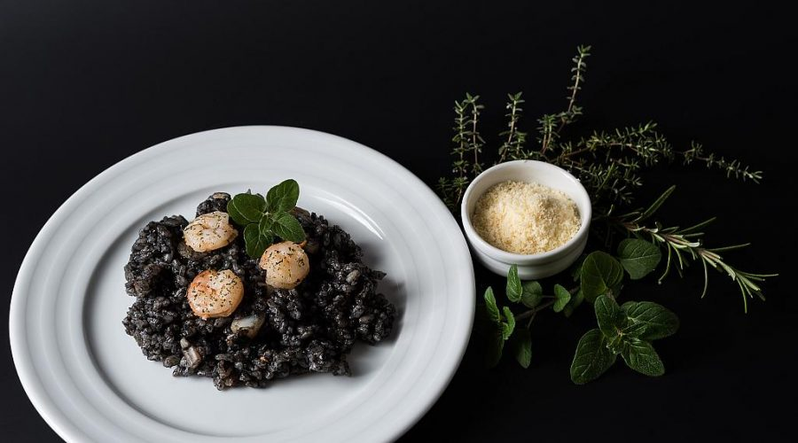

Black Risotto

Seafood rice dish and one of the tastiest Croatian recipes
It is an absolute must-try when in Croatia, and you can find it in almost all restaurants from Rovinj to Dubrovnik.
Tasty Croatian dish for your family and friends.
Ingredients
- 300g rice
- 500g squid or cuttlefish
- 250 g gamberetti (optional)
- 2 sacs of squid ink
- 2 garlic cloves
- 2 onions
- 2 dl red wine
- 700 ml fish stock
- 1 tbs chopped fresh parsley
- Extra virgin olive oil
- Salt and Pepper
- Parmesan cheese